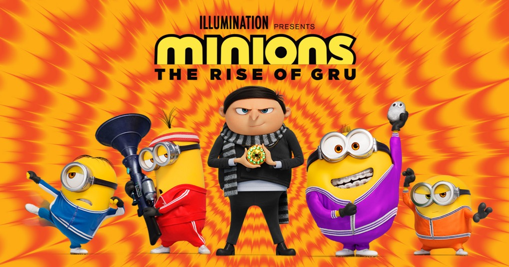

MINIONS 2
Minions: The Rise of Gru is a 2022 American computer-animated comedy film produced by Illumination and distributed by Universal Pictures. It is the sequel to the spin-off prequel Minions and the fifth entry overall in the Despicable Me franchise. It was directed by Kyle Balda, co-directed by Brad Ableson and Jonathan del Val, produced by Chris Meledandri, Janet Healy and Chris Renaud, and written by Matthew Fogel with a story by Brian Lynch and Fogel. The film features Steve Carell reprising his role as Gru and Pierre Coffin as the Minions, with Taraji P. Henson, Michelle Yeoh, RZA, Jean-Claude Van Damme, Lucy Lawless, Dolph Lundgren, Danny Trejo, Russell Brand, Julie Andrews, and Alan Arkin also starring. In the film, an 11-year-old Gru plans to become a supervillain with the help of his Minions, which leads to a showdown with a malevolent team, the Vicious 6.
WHERE WILL YOU FIND IT
You will find the cinema right next to the Food Court.